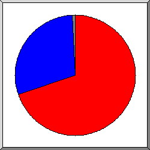

Web Server Ýstatistikleri: elitekokand.uz
Web Server Ýstatistikleri: elitekokand.uz
Program baþlagýcý: Cts,21-Ock-2023 17:14.
Analiz edilen tarih aralýðý: Sal,20-Ara-2022 14:46 / Cts,21-Ock-2023 17:01 (32.09 gün).
Web Server Ýstatistikleri: elitekokand.uzProgram baþlagýcý: Cts,21-Ock-2023 17:14.
Analiz edilen tarih aralýðý: Sal,20-Ara-2022 14:46 / Cts,21-Ock-2023 17:01 (32.09 gün).
(Git: Ýlk Sayfa | Genel Özet | Aylýk Rapor | Günlük Özet | Saatlik Özet | Site Tipi Raporu | Organizasyon Raporu | Yönlendirmeler Raporu | Baþarýsýz Gönderiler Raporu | Gönderici Site Raporu | Kullanýlan Browser Raporu | Kullanýlan Browserlar Özeti | Ýþletim Sistemi Raporu | Durum Kodu Raporu | Dosya Boyutu Raporu | Dosya Tipi Raporu | Dizin Raporu | Eriþim Raporu)
Parantez içindeki deðerlerin temsil ettiði gün sayýsý: 7 gün-bitiþ: 21-Ock-2023 17:14.
Baþarýlý eriþimler: 185 (1)
Baþarýlý eriþimler günlük ortalamasý : 5
Sayfalara yapýlan baþarýlý eriþimler: 25 (0)
Baþarýsýz eriþimler: 587 (0)
Yönlendirilen eriþimler: 1 689 (49)
Eriþilen belirgin dosya sayýsý: 83 (142)
Servis verilen belirgin host sayýsý: 7 (61)
Transfer edilen bilgi: 13.51 megabytes (7.42 kilobytes )
Transfer edilen bilgi günlük ortalamasý: 431.15 kilobytes (1.06 kilobytes )
(Git: Ýlk Sayfa | Genel Özet | Aylýk Rapor | Günlük Özet | Saatlik Özet | Site Tipi Raporu | Organizasyon Raporu | Yönlendirmeler Raporu | Baþarýsýz Gönderiler Raporu | Gönderici Site Raporu | Kullanýlan Browser Raporu | Kullanýlan Browserlar Özeti | Ýþletim Sistemi Raporu | Durum Kodu Raporu | Dosya Boyutu Raporu | Dosya Tipi Raporu | Dizin Raporu | Eriþim Raporu)
Herbir ünite ( ) sayfaya 1 kez eriþimi gösterir.
) sayfaya 1 kez eriþimi gösterir.
| ay | eriþim | sayfa | |
|---|---|---|---|
| Ara 2022 | 184 | 25 |   |
| Ock 2023 | 1 | 0 |
En meþgul ay: Ara 2022 (25 kez eriþimi gösterir).
(Git: Ýlk Sayfa | Genel Özet | Aylýk Rapor | Günlük Özet | Saatlik Özet | Site Tipi Raporu | Organizasyon Raporu | Yönlendirmeler Raporu | Baþarýsýz Gönderiler Raporu | Gönderici Site Raporu | Kullanýlan Browser Raporu | Kullanýlan Browserlar Özeti | Ýþletim Sistemi Raporu | Durum Kodu Raporu | Dosya Boyutu Raporu | Dosya Tipi Raporu | Dizin Raporu | Eriþim Raporu)
Herbir ünite () sayfaya 1 kez eriþimi gösterir.
| gün | eriþim | sayfa | |
|---|---|---|---|
| Paz | 0 | 0 | |
| Pts | 0 | 0 | |
| Sal | 149 | 14 |   |
| Çrþ | 35 | 11 | |
| Prþ | 0 | 0 | |
| Cum | 0 | 0 | |
| Cts | 1 | 0 |
(Git: Ýlk Sayfa | Genel Özet | Aylýk Rapor | Günlük Özet | Saatlik Özet | Site Tipi Raporu | Organizasyon Raporu | Yönlendirmeler Raporu | Baþarýsýz Gönderiler Raporu | Gönderici Site Raporu | Kullanýlan Browser Raporu | Kullanýlan Browserlar Özeti | Ýþletim Sistemi Raporu | Durum Kodu Raporu | Dosya Boyutu Raporu | Dosya Tipi Raporu | Dizin Raporu | Eriþim Raporu)
Herbir ünite () sayfaya 1 kez eriþimi gösterir.
| sa | eriþim | sayfa | |
|---|---|---|---|
| 0 | 27 | 6 | |
| 1 | 4 | 2 | |
| 2 | 2 | 2 | |
| 3 | 2 | 1 | |
| 4 | 0 | 0 | |
| 5 | 0 | 0 | |
| 6 | 0 | 0 | |
| 7 | 0 | 0 | |
| 8 | 0 | 0 | |
| 9 | 1 | 0 | |
| 10 | 0 | 0 | |
| 11 | 0 | 0 | |
| 12 | 0 | 0 | |
| 13 | 0 | 0 | |
| 14 | 2 | 2 | |
| 15 | 0 | 0 | |
| 16 | 6 | 0 | |
| 17 | 0 | 0 | |
| 18 | 54 | 2 | |
| 19 | 0 | 0 | |
| 20 | 0 | 0 | |
| 21 | 0 | 0 | |
| 22 | 0 | 0 | |
| 23 | 87 | 10 | |
(Git: Ýlk Sayfa | Genel Özet | Aylýk Rapor | Günlük Özet | Saatlik Özet | Site Tipi Raporu | Organizasyon Raporu | Yönlendirmeler Raporu | Baþarýsýz Gönderiler Raporu | Gönderici Site Raporu | Kullanýlan Browser Raporu | Kullanýlan Browserlar Özeti | Ýþletim Sistemi Raporu | Durum Kodu Raporu | Dosya Boyutu Raporu | Dosya Tipi Raporu | Dizin Raporu | Eriþim Raporu)
site tipleri listeleniyor, Sýralama: eriþim miktarý.
| eriþim | bytes% | site tipi |
|---|---|---|
| 185 | 100% | [Çözümlenmemiþ sayýsal adres] |
(Git: Ýlk Sayfa | Genel Özet | Aylýk Rapor | Günlük Özet | Saatlik Özet | Site Tipi Raporu | Organizasyon Raporu | Yönlendirmeler Raporu | Baþarýsýz Gönderiler Raporu | Gönderici Site Raporu | Kullanýlan Browser Raporu | Kullanýlan Browserlar Özeti | Ýþletim Sistemi Raporu | Durum Kodu Raporu | Dosya Boyutu Raporu | Dosya Tipi Raporu | Dizin Raporu | Eriþim Raporu)
Dilimlerin temsil ettiði büyüklük: eriþim sayýsý.
 78
78
 192.166
192.166
 83
83
 91
91
 diðer
diðer
organizasyonlar listeleniyor, Sýralama: eriþim sayýsý.
| eriþim | bytes% | organizasyon |
|---|---|---|
| 115 | 67.61% | 78 |
| 44 | 24.72% | 192.166 |
| 20 | 5.38% | 83 |
| 3 | 91 | |
| 1 | 0.76% | 54 |
| 1 | 0.76% | 3 |
| 1 | 0.76% | 5 |
(Git: Ýlk Sayfa | Genel Özet | Aylýk Rapor | Günlük Özet | Saatlik Özet | Site Tipi Raporu | Organizasyon Raporu | Yönlendirmeler Raporu | Baþarýsýz Gönderiler Raporu | Gönderici Site Raporu | Kullanýlan Browser Raporu | Kullanýlan Browserlar Özeti | Ýþletim Sistemi Raporu | Durum Kodu Raporu | Dosya Boyutu Raporu | Dosya Tipi Raporu | Dizin Raporu | Eriþim Raporu)
Dilimlerin temsil ettiði büyüklük: yönlendirilmiþ eriþim sayýsý.
http://www.elitekokand.uz/admins/login
http://www.elitekokand.uz/
http://elitekokand.uz/
https://server1.ahost.uz:2083/
 android-app://org.telegram.messenger/
android-app://org.telegram.messenger/
 http://www.elitekokand.uz/newadmin
http://www.elitekokand.uz/newadmin
 android-app://com.google.android.googlequicksearchbox/
android-app://com.google.android.googlequicksearchbox/
 http://www.elitekokand.uz/admins/color
http://www.elitekokand.uz/admins/color
gönderici URLler listeleniyor, Sýralama: yönlendirilmiþ eriþim sayýsý.
(Git: Ýlk Sayfa | Genel Özet | Aylýk Rapor | Günlük Özet | Saatlik Özet | Site Tipi Raporu | Organizasyon Raporu | Yönlendirmeler Raporu | Baþarýsýz Gönderiler Raporu | Gönderici Site Raporu | Kullanýlan Browser Raporu | Kullanýlan Browserlar Özeti | Ýþletim Sistemi Raporu | Durum Kodu Raporu | Dosya Boyutu Raporu | Dosya Tipi Raporu | Dizin Raporu | Eriþim Raporu)
Dilimlerin temsil ettiði büyüklük: baþarýsýz eriþim sayýsý.
http://www.elitekokand.uz/
http://www.elitekokand.uz/kategory/barchasi
http://www.elitekokand.uz/admins/color
http://www.elitekokand.uz/admins/products
http://www.elitekokand.uz/admins/brand
http://www.elitekokand.uz/admins/login
http://www.elitekokand.uz/admins/xususiyat
http://www.elitekokand.uz/admins
 http://www.elitekokand.uz/newadmin
diðer
http://www.elitekokand.uz/newadmin
diðer
gönderici URLler listeleniyor, Sýralama: baþarýsýz eriþim sayýsý.
(Git: Ýlk Sayfa | Genel Özet | Aylýk Rapor | Günlük Özet | Saatlik Özet | Site Tipi Raporu | Organizasyon Raporu | Yönlendirmeler Raporu | Baþarýsýz Gönderiler Raporu | Gönderici Site Raporu | Kullanýlan Browser Raporu | Kullanýlan Browserlar Özeti | Ýþletim Sistemi Raporu | Durum Kodu Raporu | Dosya Boyutu Raporu | Dosya Tipi Raporu | Dizin Raporu | Eriþim Raporu)

Dilimlerin temsil ettiði büyüklük: eriþim sayýsý.
http://elitekokand.uz/
http://www.elitekokand.uz/
diðer
gönderici siteler listeleniyor, Sýralama: eriþim sayýsý.
| eriþim | site |
|---|---|
| 101 | http://elitekokand.uz/ |
| 43 | http://www.elitekokand.uz/ |
| 1 | android-app://org.telegram.messenger/ |
(Git: Ýlk Sayfa | Genel Özet | Aylýk Rapor | Günlük Özet | Saatlik Özet | Site Tipi Raporu | Organizasyon Raporu | Yönlendirmeler Raporu | Baþarýsýz Gönderiler Raporu | Gönderici Site Raporu | Kullanýlan Browser Raporu | Kullanýlan Browserlar Özeti | Ýþletim Sistemi Raporu | Durum Kodu Raporu | Dosya Boyutu Raporu | Dosya Tipi Raporu | Dizin Raporu | Eriþim Raporu)
Dilimlerin temsil ettiði büyüklük: sayfa eriþim sayýsý.
Mozilla/5.0 (Windows NT 10.0; Win64; x64) AppleWebKit/537.36 (KHTML, like Gecko) Chrome/108.0.0.0 Safari/537.36
Go-http-client/1.1
Mozilla/5.0 (Windows NT 10.0; Win64; x64; rv:108.0) Gecko/20100101 Firefox/108.0
Mozilla/5.0 (Linux; Android 10; ELE-L29) AppleWebKit/537.36 (KHTML, like Gecko) Chrome/108.0.0.0 Mobile Safari/537.36
Mozilla/5.0 (iPhone; CPU iPhone OS 12_2 like Mac OS X) AppleWebKit/605.1.15 (KHTML, like Gecko) Mobile/15E148
Mozilla/5.0 (Windows NT 10.0; Win64; x64) AppleWebKit/537.36 (KHTML, like Gecko) Chrome/103.0.5060.66 Safari/537.36 Edg/103.0.1264.44
Browserlar listeleniyor - en az 1 kez eriþimi gösterir, Sýralama: sayfa eriþim sayýsý.
| eriþim | sayfa | browser |
|---|---|---|
| 146 | 12 | Mozilla/5.0 (Windows NT 10.0; Win64; x64) AppleWebKit/537.36 (KHTML, like Gecko) Chrome/108.0.0.0 Safari/537.36 |
| 8 | 7 | Go-http-client/1.1 |
| 4 | 3 | Mozilla/5.0 (Windows NT 10.0; Win64; x64; rv:108.0) Gecko/20100101 Firefox/108.0 |
| 3 | 1 | Mozilla/5.0 (Linux; Android 10; ELE-L29) AppleWebKit/537.36 (KHTML, like Gecko) Chrome/108.0.0.0 Mobile Safari/537.36 |
| 1 | 1 | Mozilla/5.0 (iPhone; CPU iPhone OS 12_2 like Mac OS X) AppleWebKit/605.1.15 (KHTML, like Gecko) Mobile/15E148 |
| 1 | 1 | Mozilla/5.0 (Windows NT 10.0; Win64; x64) AppleWebKit/537.36 (KHTML, like Gecko) Chrome/103.0.5060.66 Safari/537.36 Edg/103.0.1264.44 |
| 22 | 0 | [not listed: 3 browserlar] |
(Git: Ýlk Sayfa | Genel Özet | Aylýk Rapor | Günlük Özet | Saatlik Özet | Site Tipi Raporu | Organizasyon Raporu | Yönlendirmeler Raporu | Baþarýsýz Gönderiler Raporu | Gönderici Site Raporu | Kullanýlan Browser Raporu | Kullanýlan Browserlar Özeti | Ýþletim Sistemi Raporu | Durum Kodu Raporu | Dosya Boyutu Raporu | Dosya Tipi Raporu | Dizin Raporu | Eriþim Raporu)
Dilimlerin temsil ettiði büyüklük: sayfa eriþim sayýsý.
Safari
Go-http-client
Firefox
Mozilla
browserlar listeleniyor - en az 1 kez eriþimi gösterir, Sýralama: sayfa eriþim sayýsý.
| no. | eriþim | sayfa | browser |
|---|---|---|---|
| 1 | 157 | 14 | Safari |
| 150 | 14 | Safari/537 | |
| 2 | 8 | 7 | Go-http-client |
| 8 | 7 | Go-http-client/1 | |
| 3 | 4 | 3 | Firefox |
| 4 | 3 | Firefox/108 | |
| 4 | 1 | 1 | Mozilla |
| 15 | 0 | [not listed: 2 browserlar] |
(Git: Ýlk Sayfa | Genel Özet | Aylýk Rapor | Günlük Özet | Saatlik Özet | Site Tipi Raporu | Organizasyon Raporu | Yönlendirmeler Raporu | Baþarýsýz Gönderiler Raporu | Gönderici Site Raporu | Kullanýlan Browser Raporu | Kullanýlan Browserlar Özeti | Ýþletim Sistemi Raporu | Durum Kodu Raporu | Dosya Boyutu Raporu | Dosya Tipi Raporu | Dizin Raporu | Eriþim Raporu)

Dilimlerin temsil ettiði büyüklük: sayfa eriþim sayýsý.
Windows
iþletim sistemi bilinmiyor
Unix
Macintosh
iþlerim sistemleri listeleniyor, Sýralama: sayfa eriþim sayýsý.
| no. | eriþim | sayfa | sistem |
|---|---|---|---|
| 1 | 151 | 16 | Windows |
| 151 | 16 | Windows NT | |
| 2 | 23 | 7 | iþletim sistemi bilinmiyor |
| 3 | 3 | 1 | Unix |
| 3 | 1 | Linux | |
| 4 | 8 | 1 | Macintosh |
(Git: Ýlk Sayfa | Genel Özet | Aylýk Rapor | Günlük Özet | Saatlik Özet | Site Tipi Raporu | Organizasyon Raporu | Yönlendirmeler Raporu | Baþarýsýz Gönderiler Raporu | Gönderici Site Raporu | Kullanýlan Browser Raporu | Kullanýlan Browserlar Özeti | Ýþletim Sistemi Raporu | Durum Kodu Raporu | Dosya Boyutu Raporu | Dosya Tipi Raporu | Dizin Raporu | Eriþim Raporu)
Dilimlerin temsil ettiði büyüklük: eriþim sayýsý.
200 OK
301 Document moved permanently
404 Document not found
diðer
durum kodlarý listeleniyor, Numara sýralý.
| eriþim | durum kodu |
|---|---|
| 166 | 200 OK |
| 1677 | 301 Document moved permanently |
| 12 | 302 Document found elsewhere |
| 19 | 304 Not modified since last retrieval |
| 586 | 404 Document not found |
| 1 | 405 Method not allowed |
(Git: Ýlk Sayfa | Genel Özet | Aylýk Rapor | Günlük Özet | Saatlik Özet | Site Tipi Raporu | Organizasyon Raporu | Yönlendirmeler Raporu | Baþarýsýz Gönderiler Raporu | Gönderici Site Raporu | Kullanýlan Browser Raporu | Kullanýlan Browserlar Özeti | Ýþletim Sistemi Raporu | Durum Kodu Raporu | Dosya Boyutu Raporu | Dosya Tipi Raporu | Dizin Raporu | Eriþim Raporu)
Dilimlerin temsil ettiði büyüklük: eriþim sayýsý.
0
11B- 100B
101B- 1kB
1kB- 10kB
10kB-100kB
100kB- 1MB
| boyut | eriþim | bytes% |
|---|---|---|
| 0 | 21 | |
| 1B- 10B | 0 | |
| 11B- 100B | 15 | 0.01% |
| 101B- 1kB | 8 | 0.05% |
| 1kB- 10kB | 38 | 1.25% |
| 10kB-100kB | 43 | 15.27% |
| 100kB- 1MB | 60 | 83.43% |
(Git: Ýlk Sayfa | Genel Özet | Aylýk Rapor | Günlük Özet | Saatlik Özet | Site Tipi Raporu | Organizasyon Raporu | Yönlendirmeler Raporu | Baþarýsýz Gönderiler Raporu | Gönderici Site Raporu | Kullanýlan Browser Raporu | Kullanýlan Browserlar Özeti | Ýþletim Sistemi Raporu | Durum Kodu Raporu | Dosya Boyutu Raporu | Dosya Tipi Raporu | Dizin Raporu | Eriþim Raporu)
Dilimlerin temsil ettiði büyüklük: eriþim miktarý.
[dosya uzantýsý yok]
.jpg [JPEG graphics]
[Dizinler]
.webp
.css [Cascading Style Sheets]
.js [JavaScript code]
.png [PNG graphics]
dosya tipleri listeleniyor - en az 0.1% trafiði olan, Sýralama: eriþim miktarý.
| eriþim | bytes% | dosya uzantýsý |
|---|---|---|
| 32 | 29.50% | [dosya uzantýsý yok] |
| 15 | 19.60% | .jpg [JPEG graphics] |
| 25 | 17.48% | [Dizinler] |
| 33 | 16.63% | .webp |
| 27 | 12.10% | .css [Cascading Style Sheets] |
| 15 | 3.43% | .js [JavaScript code] |
| 19 | 1.09% | .png [PNG graphics] |
| 19 | 0.16% | [not listed: 3 dosya uzantýlarý] |
(Git: Ýlk Sayfa | Genel Özet | Aylýk Rapor | Günlük Özet | Saatlik Özet | Site Tipi Raporu | Organizasyon Raporu | Yönlendirmeler Raporu | Baþarýsýz Gönderiler Raporu | Gönderici Site Raporu | Kullanýlan Browser Raporu | Kullanýlan Browserlar Özeti | Ýþletim Sistemi Raporu | Durum Kodu Raporu | Dosya Boyutu Raporu | Dosya Tipi Raporu | Dizin Raporu | Eriþim Raporu)
Dilimlerin temsil ettiði büyüklük: eriþim miktarý.
/kategory/
/eliteKokand/
[Ana dizin]
/img/
/frontend/
/admins/
/css/
/admin/
/kategoryRasm/
 /js/
diðer
/js/
diðer
Dizinler listeleniyor - en az 0.01% trafiði olan, Sýralama: eriþim miktarý.
| eriþim | bytes% | bölüm |
|---|---|---|
| 12 | 24.96% | /kategory/ |
| 34 | 18.44% | /eliteKokand/ |
| 28 | 18.08% | [Ana dizin] |
| 7 | 13.89% | /img/ |
| 21 | 10.35% | /frontend/ |
| 18 | 3.94% | /admins/ |
| 3 | 3.35% | /css/ |
| 6 | 2.89% | /admin/ |
| 10 | 1.97% | /kategoryRasm/ |
| 3 | 1.13% | /js/ |
| 9 | 0.69% | /owlcarousel/ |
| 12 | 0.24% | /brend/ |
| 1 | 0.05% | /cgi-sys/ |
| 6 | 0.02% | /checkbox/ |
| 15 | 0.01% | [not listed: 1 bölüm] |
(Git: Ýlk Sayfa | Genel Özet | Aylýk Rapor | Günlük Özet | Saatlik Özet | Site Tipi Raporu | Organizasyon Raporu | Yönlendirmeler Raporu | Baþarýsýz Gönderiler Raporu | Gönderici Site Raporu | Kullanýlan Browser Raporu | Kullanýlan Browserlar Özeti | Ýþletim Sistemi Raporu | Durum Kodu Raporu | Dosya Boyutu Raporu | Dosya Tipi Raporu | Dizin Raporu | Eriþim Raporu)
Dilimlerin temsil ettiði büyüklük: eriþim sayýsý.
/
diðer
dosyalar listeleniyor - en az 20 eriþim, Sýralama: eriþim sayýsý.
| eriþim | bytes% | son saat | dosya |
|---|---|---|---|
| 25 | 17.48% | 21/Ara/22 03:01 | / |
| 160 | 82.52% | 21/Ock/23 09:01 | [not listed: 81 dosyalar] |